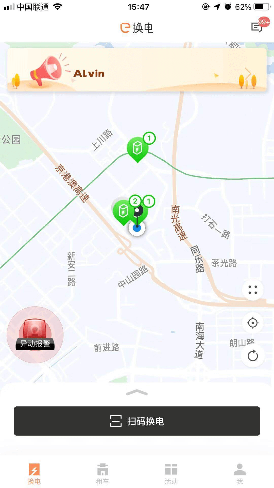
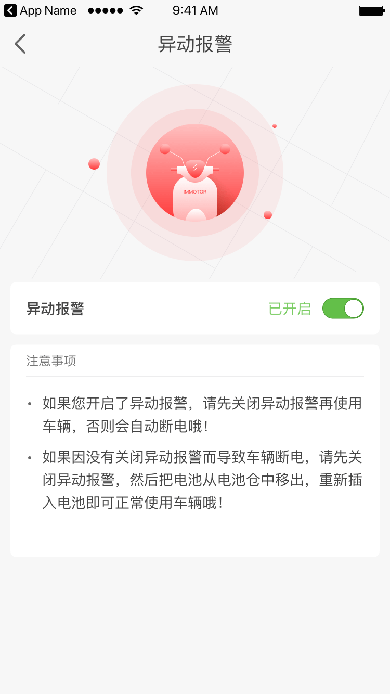

车辆不能启动？
如果开启异动报警，启动车辆前需要先关闭异动报警，否则车辆不能使用，处理方案如下：
1，如果用户在“我的车辆”中打开了“异动报警”则app首页会有异动报警图案，用户点击进入则可以进入异动报警开关界面，关闭异动报警后，则用户可正常使用车辆。
2，如果因为没有关闭异动报警导致车辆断电，则用户需要先关闭异动报警，然后取出电池仓中的电池重新插入即可正常使用车辆。
3，如果车辆还是不能启动请拨打客服电话（0755-27787220）或者找服务商寻求帮助。

